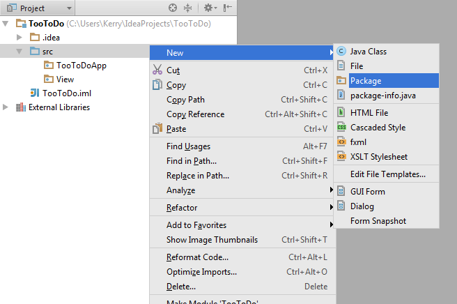

We are following the Model-View-Controller architectural pattern. In this fashion we will build the model classes. Since this is a tutorial that is focused on JavaFX, the code will be explained and given to you.
The models are meant to manage the data and logic of our application. Create a new package and call it “Model”.

Now that we have created a new package, create a new Java class called ToDo. This Java file is the central component to managing the to-do list data. Here we can set task names and notes and mark when it is complete. One thing to note is that the String and Boolean objects are actually simple properties that are readable and writeable when the package javafx.beans.property is imported. Each of the classes in this package provide full implementation of a Property wrapping its respective object. Read and work through the following code. doneString is a string that will be displayed in the tableview. When the boolean setter method is used it will change the value of the string.
package TooToDoApp.Model;
import javafx.beans.property.SimpleBooleanProperty;
import javafx.beans.property.SimpleStringProperty;
import javafx.collections.FXCollections;
import javafx.collections.ObservableList;
public class ToDo {
private String taskName;
private String taskNotes;
private String doneString;
public Boolean isComplete;
public ToDo() {
setTaskName("");
setTaskNotes("");
setComplete(false);
}
public ToDo(String taskName, String taskNotes) {
setTaskName(taskName);
setTaskNotes(taskNotes);
setComplete(false);
}
public void setTaskName(String taskName) { this.taskName = taskName;}
public void setTaskNotes(String taskNotes) { this.taskNotes = taskNotes; }
public void setComplete(boolean isComplete) {
this.isComplete = isComplete;
doneString = (isComplete) ? "Done!" : "No";
}
public Boolean getComplete() {
return isComplete;
}
public String getTaskNotes() {
return taskNotes;
}
public String getTaskName() {
return taskName;
}
public String getDoneString() {
return doneString;
}
}
Next we want to manage data that the user enters. We would like to maintain data such as the username and password and the user specific to-do lists. The ObservableList imported from javafx.collections is the list used to display the tasks and notes. An ObservableList allows programmers to create listeners to track changes of the list when they occur. Work through the following code and place it in a new file named User.java. Most of the functions are just getters and setters.
package TooToDoApp.Model;
import javafx.collections.FXCollections;
import javafx.collections.ObservableList;
public class User {
private String UserName = "";
private String Password = "";
private ObservableList toDoList;
public User(String name, String pw) {
setUserName(name);
setPassword(pw);
toDoList = FXCollections.observableArrayList();
}
public void setPassword(String pw) {
Password = pw;
}
public void setUserName(String name) {
UserName = name;
}
public String getUserName() {
return UserName;
}
public String getPassword() {
return Password;
}
public ObservableList getToDoList() {
return toDoList;
}
public void addTask(ToDo newTask) {
toDoList.add(newTask);
}
} Here we are allowed to manipulate data such as the username and password and the user specific to-do lists. The ObservableList imported from javafx.collections is the list used to display the tasks and notes. An ObservableList allows listeners (you) to track changes of the list when they occur. In this case you can track what is added, modified, or deleted from the list.
What happens if we have multiple user accounts? How do we manage that? The answer is simple. We need a Java file in the model package that can contain all the different accounts in a list of some sort. We will now create a container class. We need an array list of users and a current user attribute. This class also has a function that will return the index of previously made accounts within the list given a username. Using this index, we can use passwordMatch() to check a password. Create a new Java file named Container.java and work through the following code:
package TooToDoApp.Model;
import java.util.ArrayList;
public class Container {
private ArrayList users = new ArrayList();
private User currentUser;
public Container() {
}
public void setCurrentUser(User currentUser) {
this.currentUser = currentUser;
}
public User getCurrentUser() {
return currentUser;
}
public ArrayList getUsers() {
return users;
}
public void addUser(User newUser) {
users.add(newUser);
}
public int userIndex(String userName) {
if (users != null) {
for (int i = 0; i < users.size(); i++) {
if (userName.equalsIgnoreCase(users.get(i).getUserName())) {
return i;
}
}
}
return -1;
}
public boolean passwordMatch(int index, String password) {
return users.get(index).getPassword().equals(password);
}
}
Congratulations! Next, we will build the controller classes of our application.